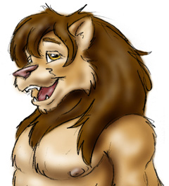

About Wookiee:
I have been drawing for as long as I can remember. My work consisted mostly of
wildlife pencils, horse portraits in oils and some cartoon work. In 1995 I was
introduced to the Furry Fandom and since then have been drawing mainly furry art
ever since. I am a Canadian fur just about to turn 40. My alias, 'Wookiee', was
given to me by my friends long before I knew what a furry was since I tend to be a
very hairy fellow. Here are a few samples of my work.
Web Links:
http://www.furnation.com/wookiee/
|
 |